РАЗРАБОТКА ИНФОРМАЦИОННОЙ СИСТЕМЫ ДЛЯ ХРАНЕНИЯ ИНФОРМАЦИИ О
СОТРУДНИКАХ ПРЕДПРИЯТИЯ
Сложность: *
Теги: справочник, регистр сведений, табличная часть справочника, подчиненный справочник
ЗАДАНИЕ
Заказчик просит разработать информационную систему для хранения информации о сотрудниках предприятия.
В данной информационной системе необходимо хранить:
1. Список сотрудников.
2. Информацию о трудовой деятельности каждого сотрудника:
– место работы;
– дату начала работы;
– дату увольнения;
– должность.
3. Информацию о детях сотрудников:
– ФИО ребенка;
– год
рождения.
4. Информацию о текущем окладе сотрудника.
q Создать новую информационную базу.
q Открыть информационную базу в режиме «Конфигуратор».
q Открыть окно конфигурации.
Подробнее о том, как это сделать, смотрите в Лабораторной работе № 2 (стр. 17).
Чтобы хранить в информационной системе список сотрудников, необходимо добавить справочник.
Определение
Справочник – это объект конфигурации, который хранит справочную информацию, например, перечень товаров или список подразделений организации (более подробно про справочники можно прочитать здесь: https://v8.1c.ru/platforma/spravochniki/).
Создадим справочник «Сотрудники».
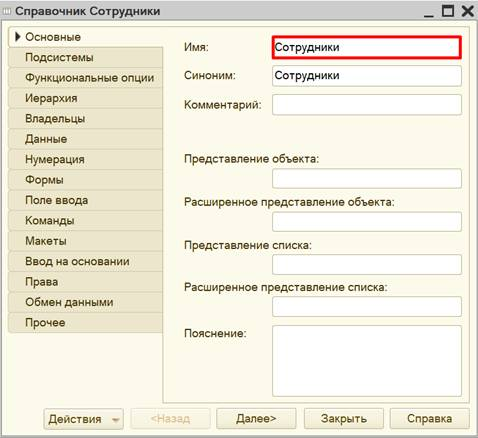
Если открыть данный справочник в режиме «1С:Предприятие», то он будет выглядеть следующим образом:
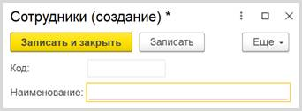
Обратите внимание, что поля «Код» и «Наименование» система сгенерировала самостоятельно при добавлении нового справочника. Эти поля являются стандартными реквизитами. Стандартные реквизиты платформа создает автоматически, исходя из свойств конкретного объекта конфигурации. Поле «Код» заполнять не нужно, система сделает это автоматически. Поле «Наименование» является обязательным для заполнения.
Для добавления полей на карточку сотрудника перейдем на вкладку «Данные».
Длина поля «Наименование» ограничена, что помешает нам при попытке ввести длинное ФИО сотрудника. Необходимо увеличить длину наименования до 70 знаков.
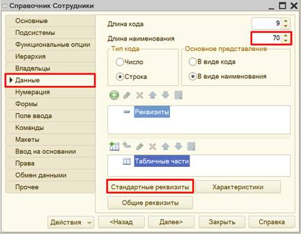
В этом же окне можно посмотреть стандартные реквизиты справочника. В открывшемся окне можно изменить синоним стандартного реквизита.
Определение
Синоним – это название реквизита, удобное для пользователя.
Добавим синоним для реквизита «Наименование» – «ФИО».
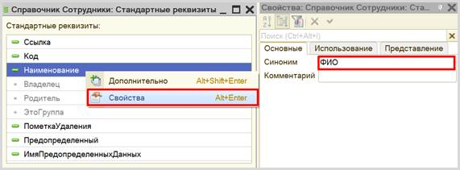
Теперь справочник в режиме «1С:Предприятие» будет выглядеть следующим образом:
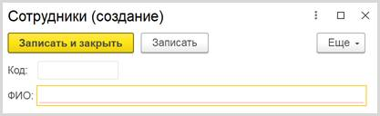
Таким образом, была реализована возможность хранения списка сотрудников.
Но по условию задачи нам необходимо хранить еще множество информации о сотрудниках, и стандартных реквизитов нам недостаточно. Нужно создать свои собственные реквизиты.
Как в данной системе организовать хранение информации о трудовой деятельности сотрудника? Для этого добавим в справочник табличную часть «ТрудоваяДеятельность» с помощью кнопки «Добавить табличную часть».
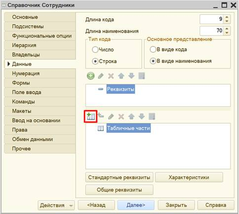
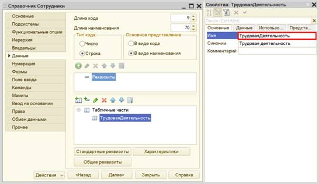
Теперь создадим реквизиты табличной части – колонки таблицы – с помощью кнопки «Добавить реквизит». Добавляем четыре реквизита.
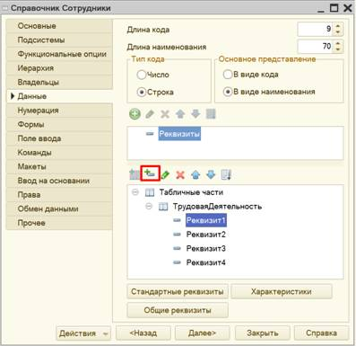
Меняем свойства созданных реквизитов. Обратите внимание на тип создаваемых реквизитов.
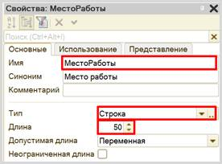
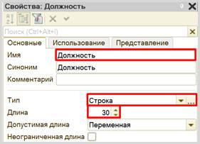
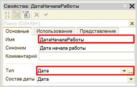
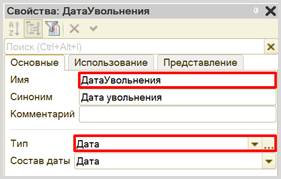
Табличная часть справочника должна выглядеть следующим образом:
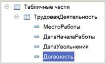
Откроем справочник «Сотрудники» в режиме «1С:Предприятие» и заполним данные о двух сотрудниках.
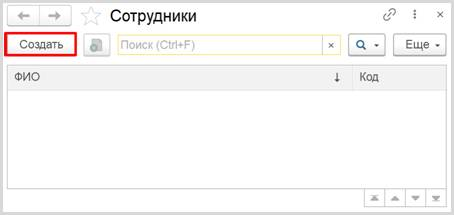
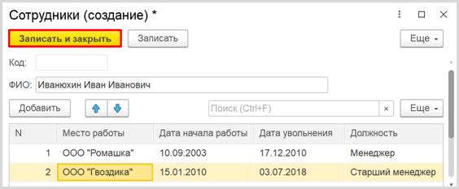
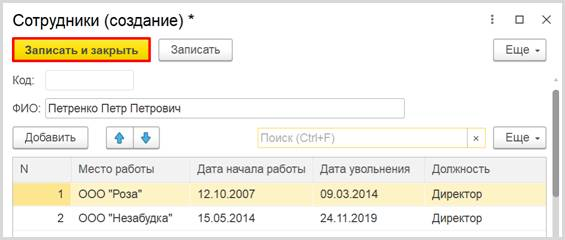
Теперь справочник «Сотрудники» может хранить данные о трудовой деятельности сотрудников.
Но нам нужно также сохранять данные об их детях, чтобы отдел кадров мог подготовить к Новому году сладкие подарки для детей младше 18 лет.
Можно по аналогии создать табличную часть и заполнить ее информацией о детях сотрудников, но мы рассмотрим еще один вариант хранения информации.
Создадим подчиненный справочник.
Определение
Подчиненный справочник – это справочник, значения которого зависят от значения другого – родительского – справочника.
Создадим новый справочник «Дети».
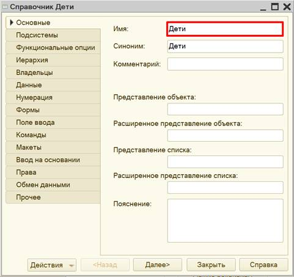
Справочник «Дети» будет подчинен справочнику «Сотрудники». Для настройки подчинения необходимо перейти на вкладку «Владельцы» и из списка справочников выбрать справочник «Сотрудники».
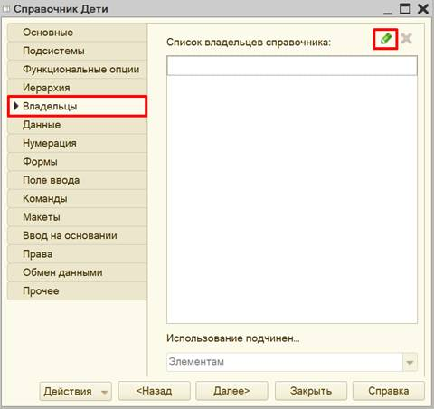
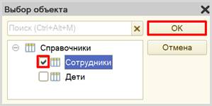
Для настройки структуры справочника переходим на вкладку «Данные» и добавляем реквизит «ГодРождения» с типом «Число».
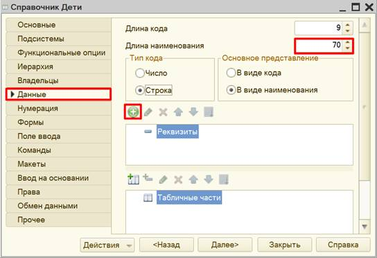
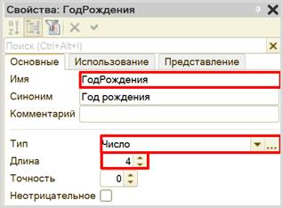
Самостоятельно измените синоним стандартного реквизита «Наименование» на «ФИО» справочника «Дети».
Теперь можно запустить программу в режиме «1С:Предприятие» и ввести данные о детях сотрудников. Причем мы можем это сделать прямо из карточки сотрудника.
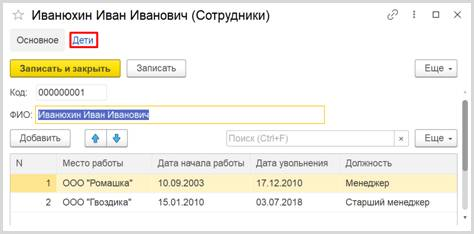
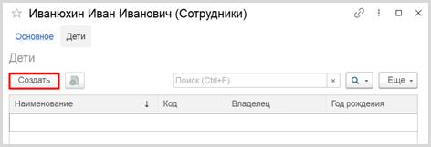
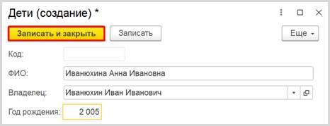
Аналогично можно добавлять информацию о детях напрямую в справочник «Дети».
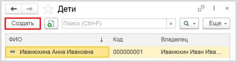
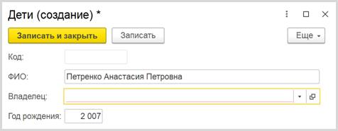
В таком случае поле «Владелец» необходимо заполнить вручную.
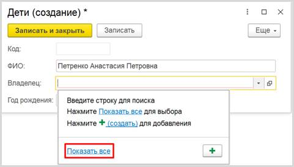
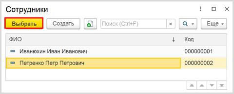
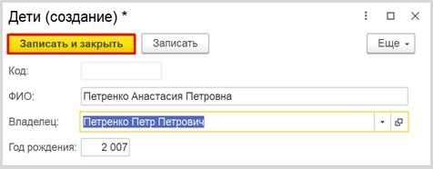
Убедимся в том, что ребенок был добавлен в карточку сотрудника.
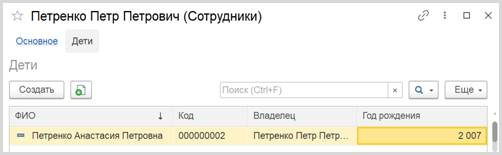
Внимание!
Создание новой карточки ребенка невозможно без заполнения поля «Владелец». Именно в этом и заключается суть подчиненных справочников: мы исключаем возможность добавления в базу объекта без владельца (ребенка без родителя, который является сотрудником нашей организации).
Кроме того, как вы могли убедиться, можно посмотреть карточки детей либо в справочнике «Дети», либо в карточке сотрудника.
Чем же такой вариант хранения информации отличается от хранения данных в табличной части справочника?
Дети сотрудников, как и сами сотрудники – это объекты аналитики. Это значит, что данные объекты и их реквизиты могут в дальнейшем быть использованы, например, для построения отчетов. Каждый объект аналитики (отдельный сотрудник или ребенок) в системе имеет уникальную ссылку. А вот данные о трудовой деятельности сотрудника, занесенные в табличную часть, несут только информативный характер, и в дальнейшем, при работе программы, использоваться никак не будут, поэтому у них нет уникальной ссылки.
Рассмотрим еще один вариант хранения данных в системе.
Перед нами стоит задача учитывать оклад сотрудника. Но оклад может меняться в зависимости от условий выполняемой работы. Следовательно, хранить данные об окладе сотрудника в справочнике нам невыгодно.
Для хранения истории изменения данных в системе «1С:Предприятие» используют регистры сведений.
Определение
Регистр сведений позволяет хранить информацию об изменении каких-либо показателей с течением времени, например, хранить данные о курсах валют (подробнее о регистрах сведений можно прочитать здесь: https://v8.1c.ru/platforma/registr-svedeniy/).
Добавим регистр сведений. Назовем его «ОкладыСотрудников». Установим периодичность «В пределах месяца». Таким образом, вносить данные об окладе сотрудников в регистр сведений можно будет только один раз в месяц.
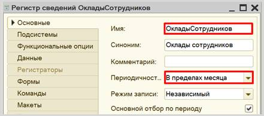
Структура регистра, как и прочих объектов конфигурации, настраивается на вкладке «Данные».
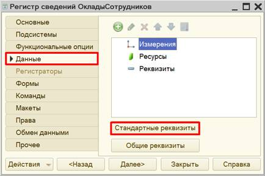
Здесь же можно заглянуть в список стандартных реквизитов.
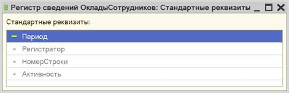
Изменив периодичность регистра на «В пределах месяца», мы активировали стандартный реквизит «Период». В него будет заноситься дата внесения данных в регистр. Это сделано для того, чтобы система могла отслеживать попытки внесения данных чаще, чем один раз в месяц.
Возвращаемся к окну редактирования регистра сведений.
Заполнение данного окна
всегда проще всего начинать с добавления ресурса.
Чтобы понять, что использовать в качестве ресурса, необходимо задать вопрос: «Что
мы хотим хранить в данном регистре?». Мы хотим хранить данные об окладах.
Следовательно, оклад и будет являться ресурсом. Тип данного реквизита – «Число».
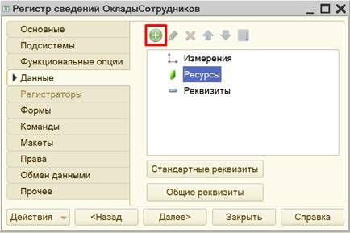
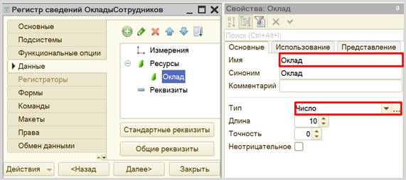
Чтобы разобраться с измерением, нужно понять, в разрезе чего мы хотим хранить оклад? Мы хотим хранить оклад (чей?) сотрудников. Значит, в качестве измерения необходимо добавить реквизит «Сотрудник». Тип данного реквизита – «СправочникСсылка.Сотрудники». В этом поле будут храниться ссылки на элементы справочника «Сотрудники».
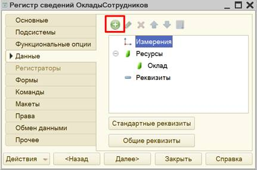
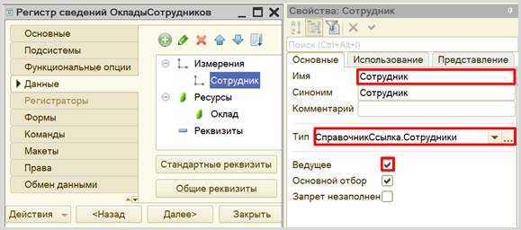
Если у измерения свойство «Ведущее» включено, это значит, что запись регистра сведений имеет смысл только пока существует объект, на который он ссылается. То есть если удалить сотрудника из справочника «Сотрудники», то все записи, связанные с этим сотрудником, из регистра сведений будут удалены. Плюс данная галочка создаст быстрый переход к регистру прямо из карточки сотрудника.
Откроем регистр сведений в режиме «1С:Предприятие» и введем данные об окладе сотрудника за несколько месяцев.
Добавим оклад сотруднику прямиком из карточки сотрудника.
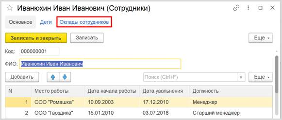
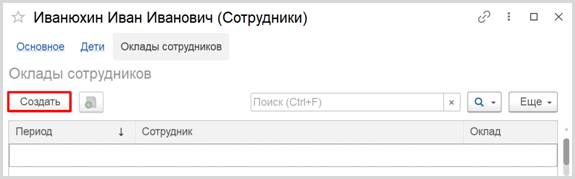
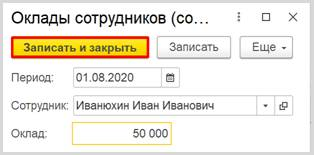
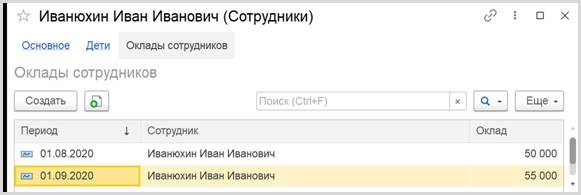
Проверим, что эти данные действительно попали в регистр сведений.
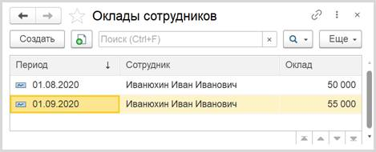
Таким образом, была реализована возможность хранения информации об изменении оклада сотрудника.
Поставленная задача решена